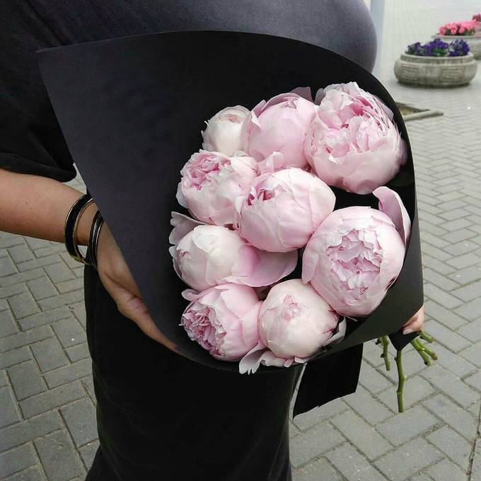

Вымойте вазу и налейте холодной воды. Идеальная температура жидкости — 3-4 градуса. Для охлаждения можно добавить лед. Тюльпаны любят прохладу.
Наполните емкость на 6-7 см.
Сделайте прямой срез на каждом стебле и 1-2 вертикальных надрезов высотой 0,5-1 см.
Удалите листья, которые соприкасаются с водой. Лишняя зелень забирает полезные вещества и способствует размножению бактерий.
Каждый день меняйте воду и мойте вазу, особенно стенки и дно
Ежедневно подрезайте стебли на 1 см. Тюльпаны можно вырастить в вазе. Для роста им достаточно свежей воды.
Не ставьте тюльпаны на солнце или у батареи. Они не переносят тепло. Если есть застекленный балкон, и температура там не опускается ниже 0 градусов, выносите цветы на ночь.
Первоцветы эгоистичны и не любят соседства с фруктами, а также другими популярными весной цветами: ландышами, нарциссами, розами, лилиями и орхидеями.
Пион

Каждый стебель цветка подрежьте под большим углом, что позволит цветам лучше впитывать жидкость. Проделывать процедуру следует под струей холодной воды.
Налейте в ёмкость воды ровно столько чтобы стебли уходили в воду ровно наполовину.
Ножом с тонким лезвием сделайте надрез на стебле цветка длиной в 5 см, что позволит улучшить поступление жидкости в растение.
С той части стебля, которая будет помещена в воду, оторвите все листья. Это не даст им загнивать в вазе.
Поставьте букет с пионами в место, куда попадает рассеянный свет. Температура помещения должна быть комфортной - не жаркой и не холодной.
Ромашка
Ставьте цветы в чистую глубокую воду
Ежедневно меняйте воду на свежую
Ежедневно обрезайте ножки у ромашек примерно на 1 см
Не допускайте попадания листьев воду, иначе они будут загнивать
Удаляйте завядшие и загнившие листья
Не ставьте цветы на сквозняки и на солнце – им это не нравится
Гиацинт
Ставьте цветы в чистую глубокую воду
Ежедневно меняйте воду на свежую
Ежедневно обрезайте ножки у ромашек примерно на 1 см
Не допускайте попадания листьев воду, иначе они будут загнивать
Удаляйте завядшие и загнившие листья
Не ставьте цветы на сквозняки и на солнце – им это не нравится
Гладиолус
При своевременной срезке соцветия гладиолусов стоят в вазе до 2-х недель.
Начинающие увядать нижние цветки своевременно удаляем.
Воду в вазе меняем ежедневно, каждый раз немного подрезая стебли перед тем как поставить их в свежую воду. Воду лучше использовать кипяченую или дистилированную.
Роза
Снимите упаковку с букета
Удалите все листья, которые могут соприкасаться с водой в вазе
Подрежьте стебли под углом 45 градусов
Помойте вазу антибактериальным средством.
Наберите в вазу чистую, прохладную (10-15 градусов) воду. Дайте ей отстояться.
Добавьте в воду специальную подкормку для цветов.
Поместите букет в прохладное место с притоком свежего воздуха.